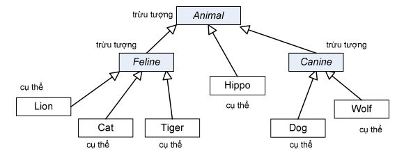

Một lớp không phải là lớp trừu tượng thì nó là lớp cụ thể. Trong cây phả hệ Animal, nếu ta cho Animal, Feline, và Canine là các lớp trừu tượng, thì còn lại sẽ là các lớp cụ thể.
Xem qua bộ thư viện chuẩn của Java, ta sẽ thấy có rất nhiều lớp trừu tượng, đặc biệt trong thư viện giao diện đồ họa GUI. Một thành phần giao diện đồ họa chung chung (GUI Component) có hình dạng như thế nào? Lớp Component là lớp cha của các lớp liên quan đến giao diện đồ họa cho những thứ như nút bấm, cửa sổ soạn thảo, thanh cuốn, hộp hội thoại, v.v..Ta không muốn tạo một đối tượng Component tổng quát và đặt nó vào màn hình, ta muốn tạo những thứ chẳng hạn như JButton để làm một nút bấm. Nói cách khác, ta chỉ tạo thực thể từ các lớp con cụ thể của Component nhưng không bao giờ từ chính Component. Vậy khi nào một lớp nên là lớp trừu tượng, khi nào thì nên là lớp cụ thể? Bút chắc là lớp trừu tượng. Bút bi và Bút máy có lẽ cũng nên là các lớp trừu tượng. Vậy đến khi nào thì các lớp trở thành lớp cụ thể? Bút máy Parker liệu có thành lớp cụ thể hay vẫn là lớp trừu tượng? Có vẻ như Bút máy Hồng Hà nét hoa 2008 chắc chắn là lớp cụ thể. Nhưng làm thế nào để chắc chắn?